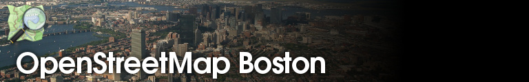
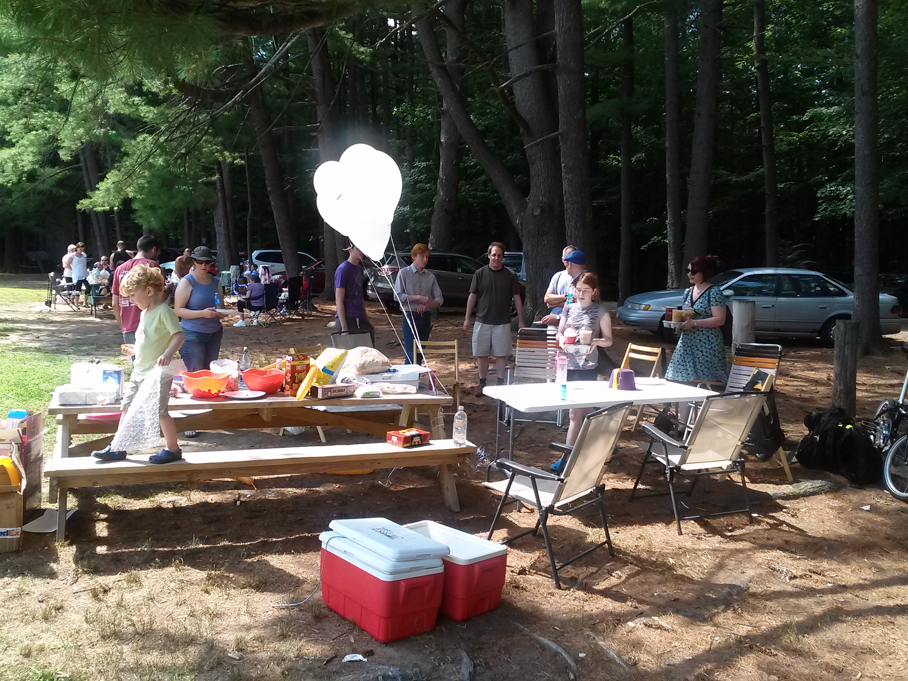
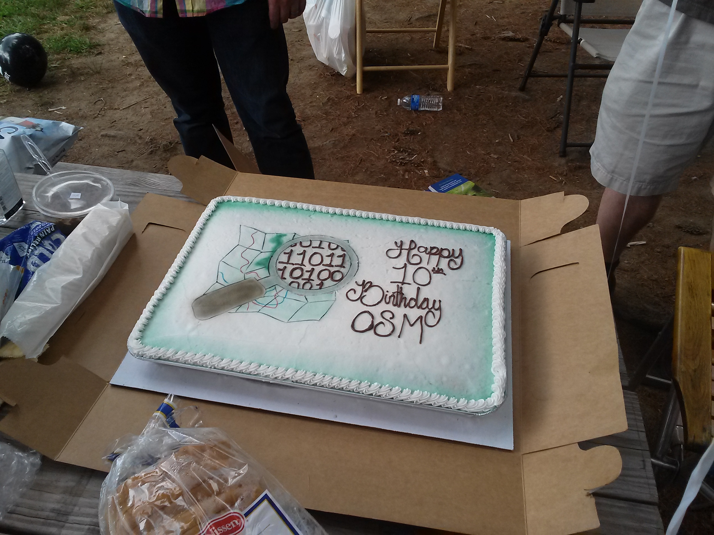
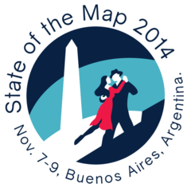

OSM News - September 2014
OpenStreetMap Boston Meetup



OSM In Red/Blue 3D

Recent question on OSM mailing lists: "In google maps world you can create your own map, with waypoints, POIs etc., of your choice and export it as KML etc., etc.,
IS there a similar website/tool/system available for OSM where I can create a POI map online and then export?"
Routing in OSM in beta

Splitting ref tags to render refs as multi-line shields.

Rendering crossroad names

OpenStreetMap-carto v2.19.0
- Render names on all types of highway areas, not just highway=pedestrian
- Make minimum zoom level depend on area size
OpenStreetMap-carto v2.20.0
- Splitting ref tags to render refs as multi-line shields. This
rendering is probably the best we can do until Mapnik 3 becomes
common (#750)
- Rendering crossroad names, a feature common in parts of Asia (#813)
- Steps to fix the cyan from small water bodies at low zoom. This should
also stop over-representing water at low zooms. (#878)
- Migrating the last of the issues from the old style over from trac
- Adjusting zoom levels where features are displayed to be more consistent
- Improved ordering of POIs (#860)
State of the Map
Buenos Aires, November 7-9
